波形鋼管 · 波形鋼板 · 機堡Pipe · Plate · Shelters파형강관 · 파형강판 · 격납고
雲林生產 0RS 螺旋波形鋼管；波形鋼板與 Wonder Arch 機堡襯板由 REXSTEEL 韓國製造。從結構設計到供應與施工支援，為台灣公共工程、國防設施與土地開發提供完整方案。0RS helical pipe made in Yunlin; corrugated plate and Wonder Arch shelter liners made by REXSTEEL in Korea. From structural design to supply and site support, a complete offer for Taiwan's public works, defense facilities and land development.운림에서 0RS 나선형 파형강관을 생산하고, 파형강판과 Wonder Arch 격납고 라이너는 REXSTEEL 한국 공장에서 만듭니다. 구조설계부터 공급과 시공 지원까지, 대만 공공공사·국방시설·토지개발에 완전한 솔루션을 제공합니다.
從排水管到機堡From drainage pipe to aircraft shelters배수관부터 격납고까지
同一套波形鋼結構技術，三種尺度的應用。One corrugated-steel technology, three scales of application.하나의 파형강 구조 기술, 세 가지 규모의 적용.
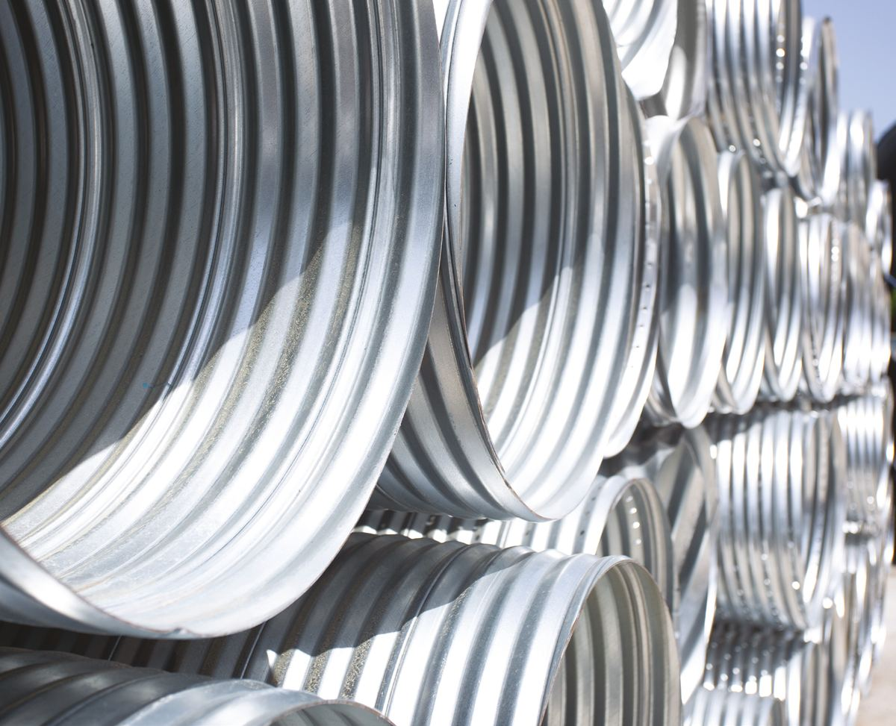
波形鋼管Corrugated steel pipe파형강관
雲林生產 0RS Ø150–600：標準管、穿孔管、PE 包覆管、PE 穿孔管。CNS 6920。0RS Ø150–600 made in Yunlin: standard, perforated, PE-coated and PE perforated. CNS 6920.운림 생산 0RS Ø150–600: 표준관, 유공관, PE 피복관, PE 유공관. CNS 6920.
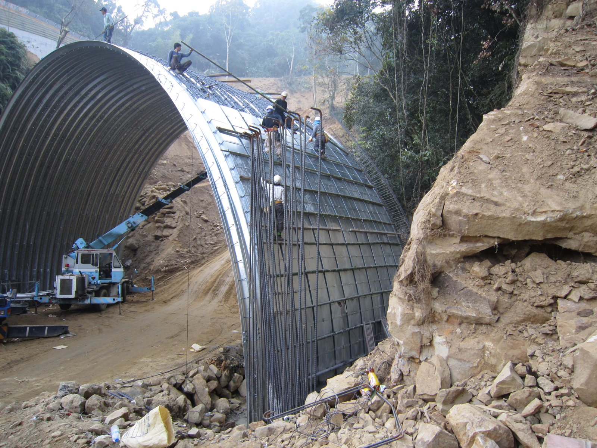
波形鋼板結構Corrugated plate structures파형강판 구조물
涵洞、生態廊道、橋梁、隧道。台灣已有施工實績，CORRA 完整設計，REXSTEEL 製造。Culverts, wildlife crossings, bridges, tunnels. Already built in Taiwan; designed with CORRA, made by REXSTEEL.암거, 생태통로, 교량, 터널. 대만 시공 실적 보유, CORRA 설계, REXSTEEL 제작.
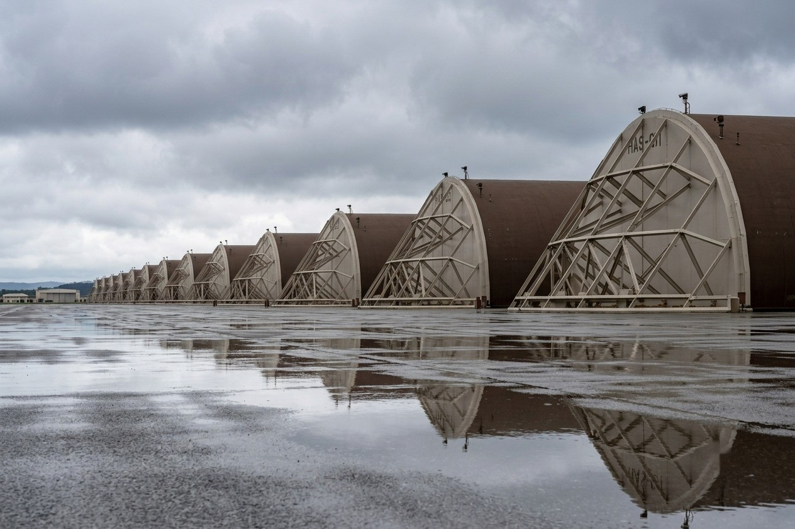
強化機堡 (HAS) 鋼拱襯板Hardened aircraft shelter liners항공기 격납고(HAS) 아치 라이너
7-Bar 爆震認證之強化機堡防剝落襯板，依美國國防部標準。軍方與統包商之台灣窗口。7-Bar blast-certified spall liners for hardened aircraft shelters, to U.S. DoD standards. Taiwan contact for defense and EPC.7-Bar 폭발 인증 강화 격납고 스폴 라이너, 미 국방부 기준. 군·EPC의 대만 창구.
波形鋼管與波形鋼板Corrugated pipe and plate파형강관과 파형강판
雲林生產 0RS 螺旋波形鋼管四種品項；波形鋼板由 REXSTEEL 韓國製造進口，並由本公司完整設計。Four 0RS helical pipe types made in Yunlin, plus corrugated plate made by REXSTEEL in Korea and fully designed by us.운림에서 0RS 나선형 파형강관 4개 품목을 생산하고, 파형강판은 REXSTEEL 한국 공장에서 만들어 수입하며 설계는 당사가 직접 합니다.
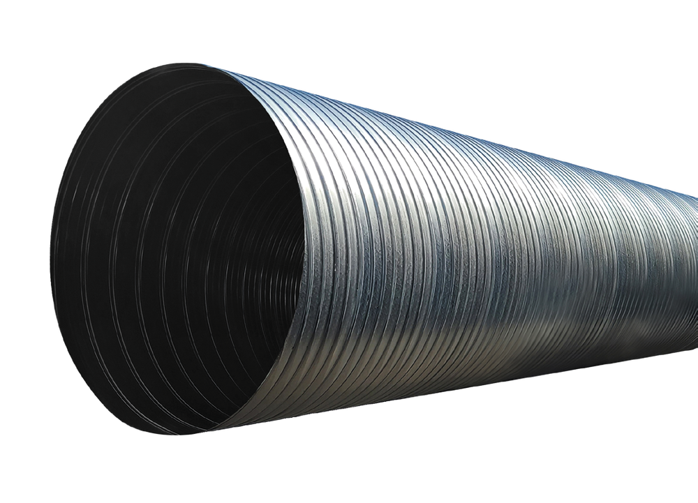
0RS 波形鋼管0RS corrugated pipe0RS 파형강관
排水 · 道路與鐵路橫越Drainage · road and rail crossings배수 · 도로·철도 횡단
Ø150–600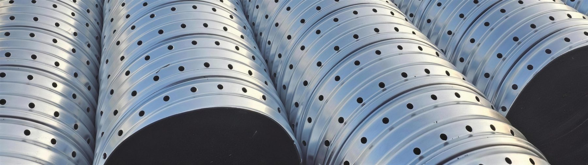
穿孔波形鋼管Perforated pipe유공관
降低地下水位 · 穩定土質Lowers groundwater · stabilizes soil지하수위 저하 · 지반 안정
Ø150–600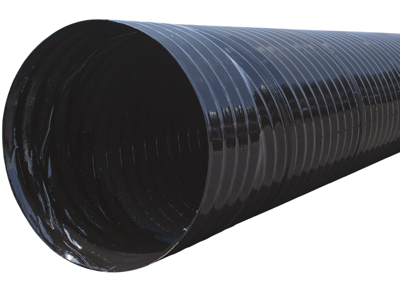
PE 包覆波形鋼管PE-coated pipePE 피복 파형강관
海水、廢水、污水等腐蝕環境Sea water, wastewater, sewage해수·폐수·오수 부식 환경
PE / Zn / Steel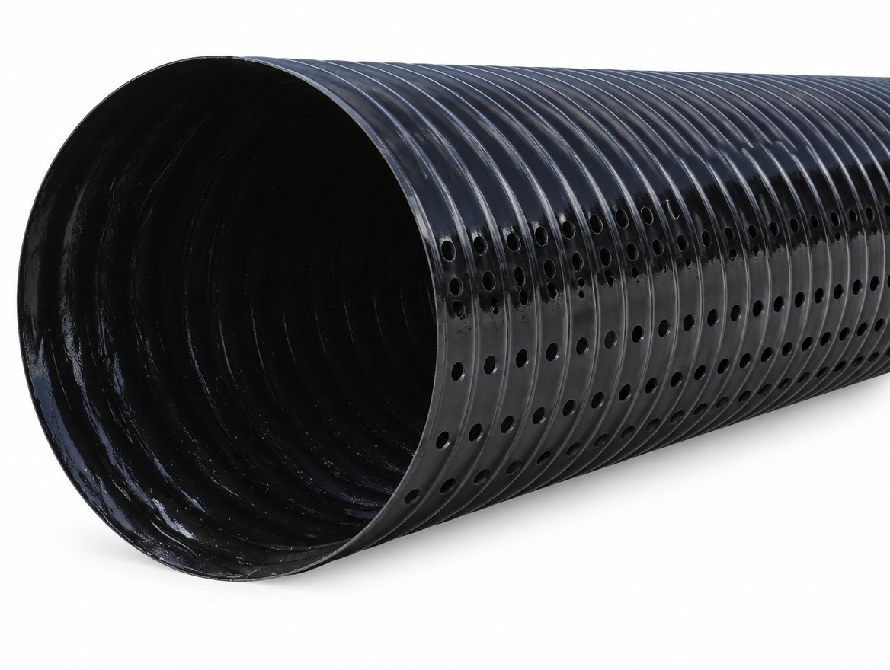
PE 包覆穿孔管PE-coated perforated pipePE 피복 유공관
主力品項 · 耐腐蝕集排水Main product · corrosion-resistant drainage주력 품목 · 내식 집배수
Ø150–600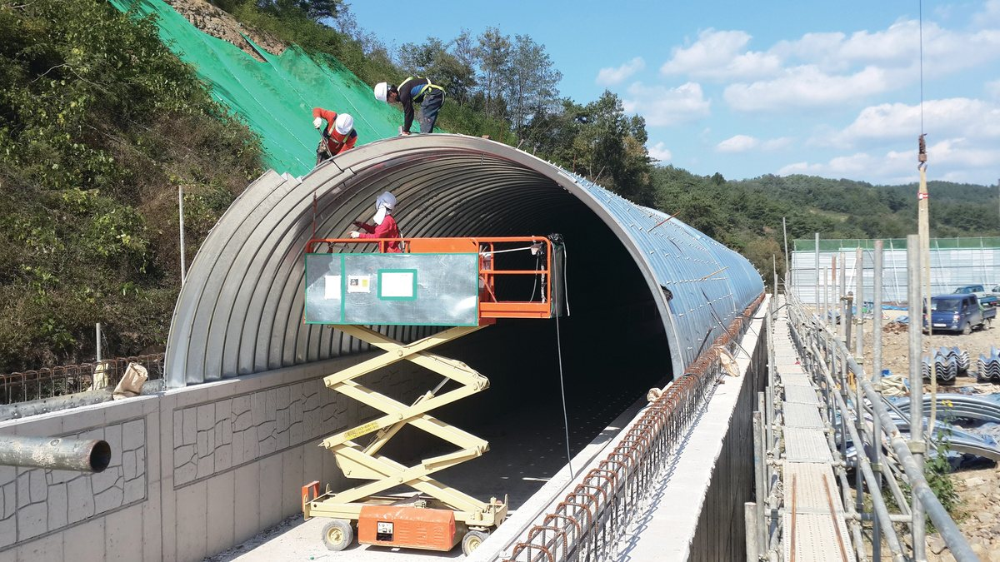
波形鋼板Corrugated steel plate파형강판
涵洞 · 生態廊道 · 橋梁 · 隧道，CORRA 設計Culverts · crossings · bridges · tunnels, CORRA design암거·생태통로·교량·터널, CORRA 설계
150×50 · 381×140更輕、更薄，
承載力不減Lighter and thinner,
with full capacity더 가볍고 더 얇게,
지지력은 그대로
柔性管讓載重與反作用力均勻分布於管周，因此能以極薄的管壁承受土壓與車輛載重。重量輕，人力即可搬運，基礎也比剛性管簡單。As a flexible pipe, load and soil reaction spread evenly around the ring, so a very thin wall carries earth and traffic loads. It is light enough to handle by hand and needs simpler bedding than rigid pipe.연성관이라 하중과 반력이 관 둘레에 고르게 분포하므로, 아주 얇은 관벽으로 토압과 차량하중을 견딥니다. 가벼워 인력으로 운반할 수 있고 기초도 강성관보다 간단합니다.
每一個案件，都有計算依據Every project backed by calculation모든 프로젝트에 계산 근거가 있습니다
波形鋼板以自行開發的 CORRA 系統完成結構計算、圖面、數量與 3D 模型；波形鋼管以 REX-CSP 依 ASTM A796 · AASHTO 及台灣載重檢核。計算書、圖面與數量表可直接提交業主與設計單位。Corrugated plate is engineered with our own CORRA system (calculations, drawings, quantities and 3D model); pipe is checked with REX-CSP to ASTM A796 / AASHTO with Taiwan loads. Reports, drawings and quantities go straight to owners and designers.파형강판은 자체 개발한 CORRA로 구조계산·도면·수량·3D 모델을 완성하고, 파형강관은 REX-CSP로 ASTM A796·AASHTO와 대만 하중을 검토합니다. 계산서·도면·수량표를 발주처와 설계사에 바로 제출할 수 있습니다.
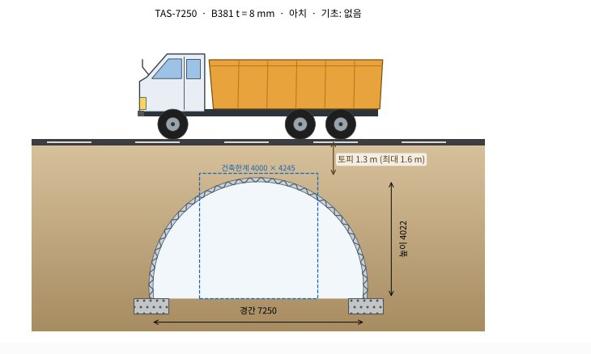
從排水管到地下通道From drains to underpasses배수관부터 지하통로까지
對於運輸困難的山區及軟弱地盤工程尤其有效。Especially effective in mountain areas with difficult access and on soft ground.운반이 어려운 산간지와 연약지반 공사에 특히 효과적입니다.
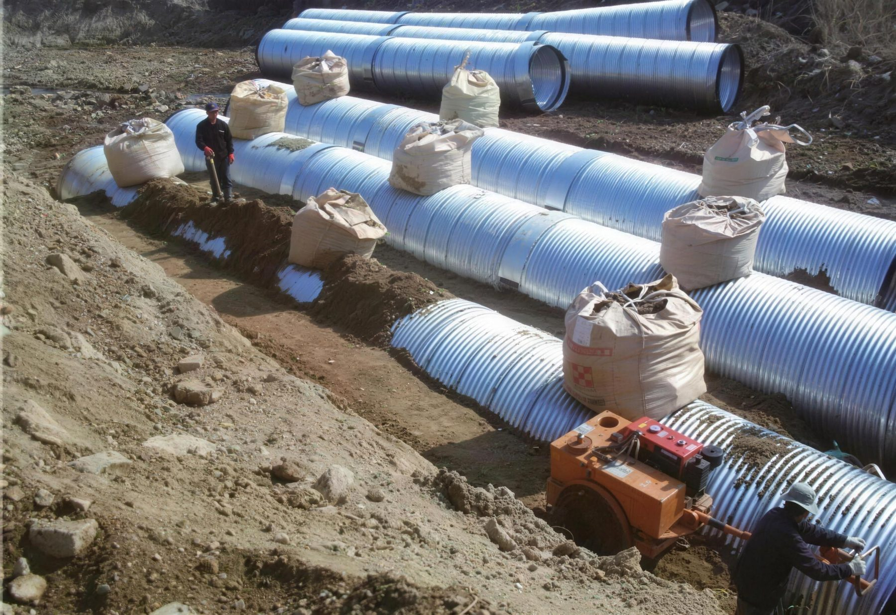
給排水用Drainage상하수·배수
土地開發、道路及鐵路縱橫向排水、灌溉Land development, road and rail drains, irrigation토지개발, 도로·철도 종횡단 배수, 관개
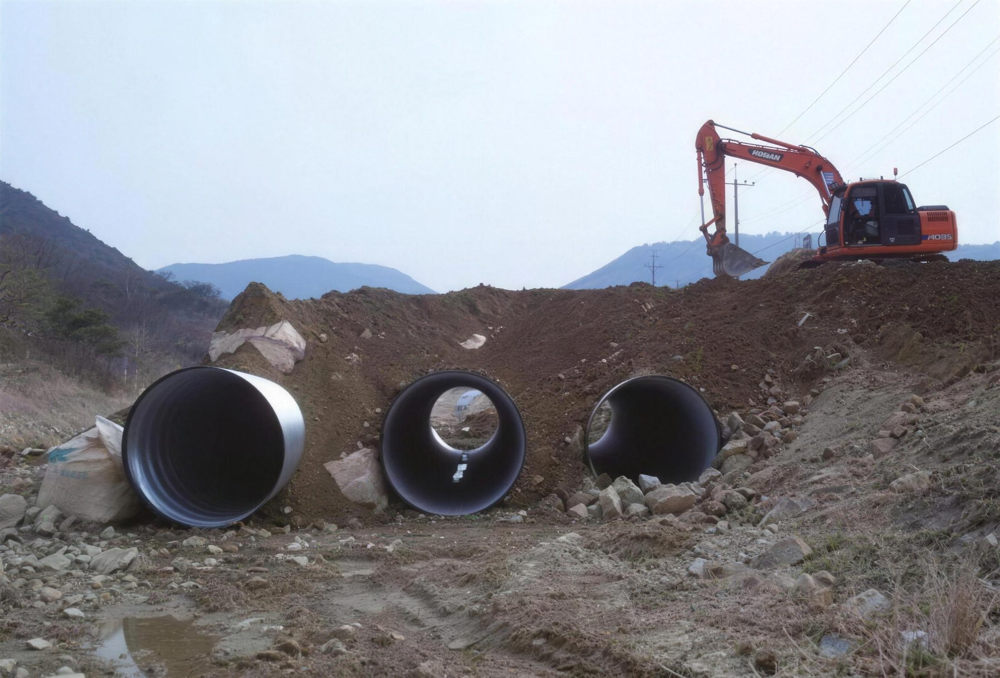
通道用Passages통로
道路與鐵路地下穿越通道、小型隧道Underpasses below roads and railways도로·철도 하부 횡단 통로, 소형 터널
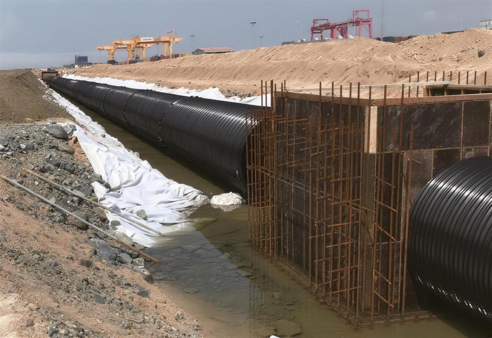
結構物Structures구조물
混凝土箱涵替代管、地下共同管道Box-culvert replacement, utility conduits콘크리트 박스 암거 대체, 지하 공동구
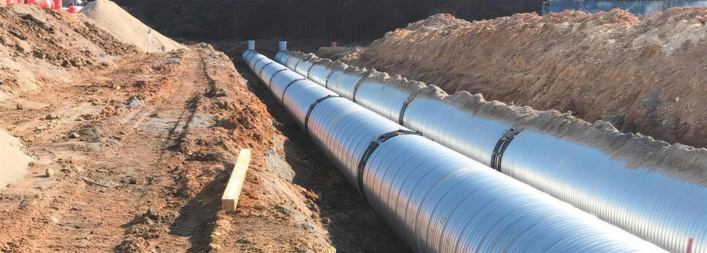
其他Other기타
集水樁、擋土牆、減輕填土載荷、混凝土模板Collector wells, retaining walls, fill relief, formwork집수정, 옹벽, 성토하중 경감, 콘크리트 거푸집
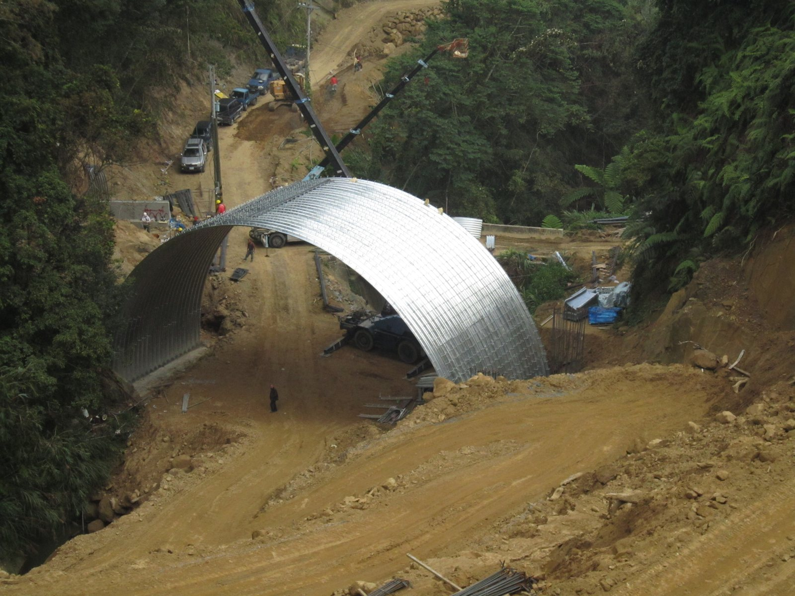
波形鋼板，台灣已經在用Corrugated plate, already built in Taiwan파형강판, 대만에서 이미 시공
REXSTEEL 集團的大型與中型波形鋼板拱形結構已於台灣山區道路完工。鋼板拱與鋼筋混凝土複合，於陡峭地形中快速施工。REXSTEEL Group large- and medium-profile plate arches have been completed on mountain roads in Taiwan: plate arches composite with reinforced concrete, built fast on steep terrain.REXSTEEL 그룹의 대형·중형 파형강판 아치가 대만 산간도로에 준공되었습니다. 강판 아치와 철근콘크리트 복합구조로 급경사 지형에서 빠르게 시공했습니다.
在地加工 × 韓國技術Local fabrication × Korean technology현지 가공 × 한국 기술
雙方各出資 50%，於雲林引進 0RS 螺旋波形鋼管生產設備。Each partner holds 50%; a 0RS helical pipe line has been installed in Yunlin.양사가 50%씩 출자해 운림에 0RS 나선형 파형강관 생산설비를 들였습니다.
浚利鋼鐵材料股份有限公司Jiun-Li Steel Material Co., Ltd.浚利鋼鐵(준리강철)
1988 年於雲林創立之鋼材供應與加工企業，三十餘年持續投資加工設備，深耕台灣中南部營建與鋼構市場。A Yunlin steel supplier and processor founded in 1988, investing in processing equipment for over three decades and serving construction and steel-structure markets in central and southern Taiwan.1988년 운림(雲林)에서 창업한 강재 공급·가공 회사. 30년 넘게 가공설비에 투자하며 대만 중남부 건설·철골 시장에서 기반을 다져 왔습니다.
- 工廠Plants공장斗南、斗六兩廠，合計約 5,000 坪Dounan and Douliu, about 5,000 ping (16,500 m²)斗南(더우난)·斗六(더우류) 2개 공장, 약 5,000평(坪)
- 加工Processing가공雷射切割 · CNC 折床 · 焊接 · 大型 H 型鋼加工Laser cutting · CNC bending · welding · heavy H-beam레이저 절단 · CNC 절곡 · 용접 · 대형 H형강 가공
- 合資貢獻JV roleJV 기여土地、廠房、既有設備與在地營業網絡Land, plant, existing equipment and local sales network토지, 공장, 기존 설비, 현지 영업 네트워크
REXSTEEL Inc.
韓國大韓鋼管集團（大韓鋼管、新韓鋼管、REXSTEEL）之波形鋼材專業公司。自 1999 年於慶南咸安生產波形鋼管，二十餘年累積韓國道路、鐵路、河川及國防工程之供應實績。The corrugated steel arm of Korea's Daehan Steel Pipe Group (Daehan Steel Pipe, Shinhan Steel Pipe, REXSTEEL). Producing corrugated pipe in Haman since 1999, with more than two decades of supply to Korean road, rail, river and defense projects.한국 대한강관그룹(대한강관·신한스틸파이프·REXSTEEL)의 파형강재 전문회사. 1999년 경남 함안에서 파형강관 생산을 시작해 20년 넘게 한국의 도로·철도·하천·국방 공사에 공급해 왔습니다.
- 產品Products제품波形鋼管 · 波形鋼板（REX-B381）· Wonder Arch 機堡襯板Corrugated pipe · corrugated plate (REX-B381) · Wonder Arch shelter liners파형강관 · 파형강판(REX-B381) · Wonder Arch 격납고 라이너
- 認證Certification인증KS D 3590 · ISO 9001:2015 · 韓國新產品 (NEP) · 新技術 (NET) · 7‑Bar 爆震實測Korean NEP · NET · 7-Bar blast tested신제품(NEP) · 신기술(NET) · 7‑Bar 폭발 실증
- 技術Engineering기술企業附設研究所 · CORRA 波形鋼板設計系統 · REX-CSP 結構計算Corporate R&D centre · CORRA plate design system · REX-CSP calculation기업부설연구소 · CORRA 파형강판 설계 시스템 · REX-CSP 구조계산
- 合資貢獻JV roleJV 기여0RS 生產設備、製造技術、品質管理與結構設計0RS production line, manufacturing know-how, quality control and structural design0RS 생산설비, 제조기술, 품질관리, 구조설계
管徑、覆土、載重條件已確定？Know your diameter, cover and loading?관경·토피·하중 조건이 정해졌나요?
來信即可取得報價與專案結構計算書。Write to us for a quotation and a project calculation report.메일 주시면 견적과 프로젝트 구조계산서를 드립니다.